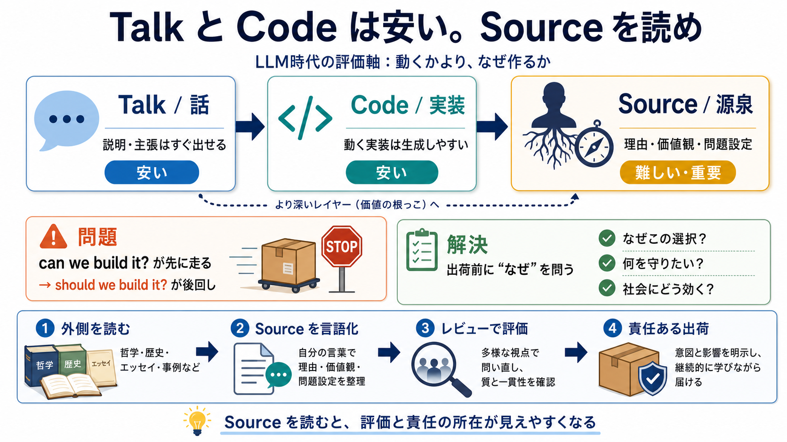

30 Years of Programming at 44 Years Old - Blain Smith
The Metallica fan page is long gone and so is the high school website. But the feeling I had when I made them, that sens…

“動くコード”も“説明（talk）”も安くなった今、偽りにくく重要なのは出どころ（source）である。
LLM等で実装生成は以前より容易になったが、なぜそれを選ぶのか（目的・価値・推論）の理解は別の難しさがある。
“コード”は見た目（動作）で騙せても、source は「何を問題と見たか」の痕跡として残りやすい。
価値の中心を「コード（実装）」から「ソース（理由・背景）」へ移すと、レビューも学習も評価軸が変わる。
コンピュータの偉人たちは単なる“技術オタク”ではなく、哲学・文学・歴史・倫理など別領域の影響が源泉として見える。
技術が長生きするのは、たまたま“正しいコード”を書いたからではなく、時代を超える理由や見方がソースとして堅固だからかもしれない。
最近のSNSやアルゴリズムのような社会的影響が大きい領域では、「作れるか（can we build it）」が先に走り、「作るべきか（should we build it）」が問われにくい。
著者は結論を断定しきらないが、プログラミング本の外にある哲学・歴史・エッセイを読むことで、自分の行動が変わったとする。
投稿の「ソース」はコードそのものではなく、その背後にある歴史・推論・価値観・問題設定の理由を指す。
“ソースを読む”は戒めで終わらず、レビュー項目や学習順序の見直しを通じて「出荷前の立ち止まり」を変える可能性がある。
強い主張には、偉人の例から「教養が技術品質を直接決めた」へ踏み込みすぎる危険や、無頓着の一般化への注意が必要だ。
LLM時代だからこそ、出荷の前に「なぜ」を確かめる—TalkとCodeだけで済ませない。
The Metallica fan page is long gone and so is the high school website. But the feeling I had when I made them, that sens…
Studying history would show modern software people who think they’re solving big problems that the problem is decades ol…
1936 - Alonzo Church also invents every language that will ever be but does it better. His lambda calculus is ignored be…
New Dimension: Code Quality. We did not include code quality as a dimension in our initial taxonomy because while metric…
At the same time, we know that code-switching comes with social and psychological repercussions. Downplaying one’s racia…